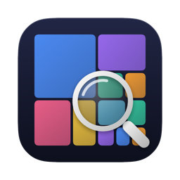

Privacy Policy
DiskLens for macOS · Effective 16 October 2026
What DiskLens reads
To measure disk usage, DiskLens reads file and folder metadata — names, sizes, dates and file types — inside the folders you allow it to scan. It also reads app information (such as an app's version and when it was last opened) to identify leftovers from app updates. To find duplicate files it computes checksums of large files in your personal folders; these checksums are kept in memory only and are discarded after the analysis. DiskLens never uploads, transmits or shares any of this information.
What DiskLens stores
Scan results (paths and sizes), cleanup recommendations and cleanup reports are saved only on your Mac, inside DiskLens's own data folder. You can delete them at any time in DiskLens ▸ Settings ▸ Privacy ▸ “Delete Scan Data and Reports”, or by deleting the app.
In the Mac App Store edition DiskLens also stores bookmarks to the folders you granted, so it can access them again after relaunch. You can remove them in Settings ▸ Scanning.
What DiskLens changes
Nothing, unless you explicitly select items, review the exact plan and approve it. Approved items are moved to the Trash or deleted, as you choose. Personal files, backups, virtual-machine disks and app data are never removed by DiskLens.
Purchases and licenses
Mac App Store edition: purchases are handled entirely by Apple. DiskLens receives only the signed transaction for “DiskLens Pro” from StoreKit to unlock features; it never sees your payment details or Apple Account, and the transaction never leaves your Mac. A copy of the unlock state and the counter for the free cleanup run are kept in your Mac's Keychain.
Direct-download edition: purchases are handled by our reseller (merchant of record), whose privacy policy applies to the checkout. The license key you receive contains a one-way hash of your e-mail address — not the address itself — and is verified offline on your Mac; DiskLens does not contact any server to check it. The trial start date and free-run counter are kept in your Keychain. To deliver updates, the direct edition downloads an update feed (appcast) from our website once a day; like any web request it reveals your IP address to the web server, and its User-Agent contains the DiskLens and macOS versions. No system profile is sent (Sparkle's profiling is off), the server's logs are not used to identify anyone, and you can turn automatic update checks off.
Cloud files
DiskLens never downloads cloud-only files from iCloud Drive or other cloud providers while scanning.
Children
DiskLens does not collect any personal information from anyone, including children.
Changes
If this policy changes, the new version will be published at this address with a new effective date.
Contact
Questions: see the support page.